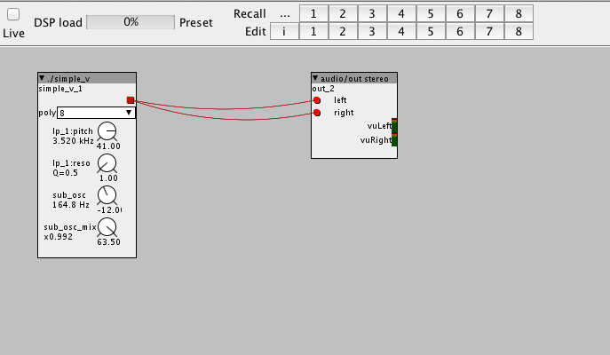
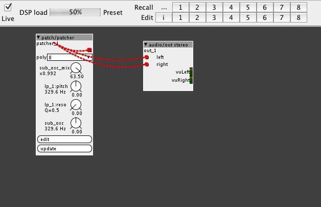

this is 'normal' ... you have saved a start.bin with another version, and you need to re-save it with latest version.
as for the main error... - send me your axoloti.prefs file (you can send it to me via PM here) - send me the contents of the console window after you start up.
EDIT: also can you please confirm your not trying to also run another version of axoloti... it is not possible to switch between version of axoloti (including 1.07 to 8 and back) , they will corrupt the preferences files.
are you running a virus scanner, if so check then I think you need to check this... perhaps this is corrupting something.
basically, if axoloti ran the demos the first time, then this proves it downloaded everything correctly... and that everything was fine. this indicates to me for some reason your axoloti.prefs file is perhaps not being saved correctly or tampered with. (as you have not indicated you have made any changes)
apart from that Im at a loss why you are the only one seeing this.
have you restarted it a few times... to check its still working
Seriously, I think your getting some kind of corruption... either a virus scanner, or something else, which is damaging either your preferences file or libraries. if you get issues again, I think this is what you have to look at.
I had some issues upgrading to 1.08 under win10 ,maybe your guide is a bit unclear at one point: by 'NOT running' , did you mean the axoloti board has to be disconnected?
in my case,I had to disconnect axoloti, de-install 1.07 and then install 1.08. the first attempt,I simply closed axoloti runtime and then installed 1.08 OVER 1.07. this left me with 1.08 locked to 1.07
now it works, one more thing is that my objects description didn't get 'exported' when adding the object to the library from axoloti UI.
this is a known issue, and I've already fixed in development, along with some other issues with the object editor.
I simply meant the Axoloti UI should not be running when upgrading/deleting preferences, since there is a chance it can re-write the preferences.
afaik, there is no requirement to de-install 1.0.7... you simply can overwrite it. BUT you must delete the preferences file. axoloti.prefs. (this is only because we are messing with pre-release versions of the software)
Ok after troubleshooting I have found out some of it. First I had to get the filepath right for my object folder. Problem is if I place it inside the the object folder (home) all the objects I have used before will have to be reassigned manually in each patch, cause the patche ant find them. BUT if i make a folder outside axoloti, where it used to be, all the objects works fine. But problem is you can only add one folder outside AXolotis homefolde. I use a few of them. Would be nice to be able to add more folders. But in general the new set up looks REALLY nice Nice work
But I do get an issue when I try to load some random tabs from sd-card. I use a string/index to call up the tabs from the sd-card. But it doesnt seem to work. When I first started axoloti 1.08 I got the message that it had renamed a folder to "untitled" or created a folder on sd card named "untitled". And i can see that comes up in this error. I am just not sure what to do with it. When I use a ctrl/i to scan through the string/index I get the same highlighted message from the bottom om the log.
EDIT: I tried moving the .tab files to the "untitled" folder but that didnt work. BTW, in the same patch I also have a few .raw samples, which played correctly. Wonder why the tabs dont work. It has something to do with the filepath, but I cant figure out what to do with it.
And I also notied that empty folders with the filenames of the .raw files used in the patch, have been created in sd-card roots, along with the untitled folder.
Ok I found out what the issue is. If I move the tabfiles to the song folder(created when saving the patch) on the sd-card it works. But it would be really nice not having to copy these tabs to each song folder for them to work. A "general" filepath would be nice
Also if you save a patch to hard disc it creates a folder on the sd-card. So if you save a lot of different version of a patch while developing it, you will end up with hundreds of empty folder on the sd card. And also having to copy the tab files each time you save a patch.
As mentioned above the audio files works even with out moving them to the folders. Not sure what is different with tab files.
ok, moved this where it belongs ... all 1.0.8 talk here
tab files... I think you need to discuss this with @johannes ... I think this is the new functionality related to files automatically being uploaded to the SDCard, which I've not played with yet. (been too busy on the library stuff!)
Ok, I think your missing the fundamental change... now everything has to be in a library.... and you can have as many libraries as you like they can either be cloud based (git) or local (i.e. directories)
a library has a defined structure
librarydir -> patches
-> objects
(more are likely to be added later, along with some other 'meta data')
so for every place you had objects , you should create a library
and you previously had Acid and DnB on your object path, then these are converted by creating type: local library : Acid local dir : ~/Documents/Acid/
type: local library : DnB local dir : ~/Documents/DnB/
AND (this is important) move your files into a library structure so .... ~/Documents/Acid/objects/drums/esnare.axs ~/Documents/Acid/objects/synth/moog.axs
~/Documents/DnB/objects/drums/ekick.axs
it will take about 2 mins to do...
I will point out a couple of things, you only really need these libraries when the subpatches are used in many projects, otherwise you should include them into a main patch using ./esnare.axs , putting too much stuff into your search path WILL become unmanageable as you add more and more stuff! I also personally use alot of embedded patchers, for this kind of stuff, they cut n paste, and there are more convenient that having tons of these things littering the file system.
Structure patches and objects (like using libraries) will allow us to do a lot more interesting things in the future, it also makes things manageable, and easier to allow sharing.
so , I know its new... and your used to the old ways... so theres a transitions, thats the prices of progress (yeah, I could have migrated the object paths, but for the number of users using it, it wasn't worth the effort, effort and time better spent on other improvements!)
I do understand that libraries are new and I have to udnerstand it a bit more. But what I have learned from playing with it today is that I can only set 4 libraries in preference. If you try and add more that 4 it will just substitute the last one added. I added my object library folder and when i tried to add another library, a, fifth, it just deleted the last one. First 3 is already occupied by factory, home and community library. Then there is only one free library folder left.
This is more like a backwards compatible issue. I have hundreds of patched which uses those filepaths. And I have used two libraries in preferences for that and can now only use one. I understand the changes and they are good but would be nice to atleast have the choice to use more than one folder. I do have plans to use new system eventually, but changing everything in one go is a lot fo work.. Anyway, I have one lirbray and that works for a now untill i adapt to the changes.
About the folder created on sd-card: I often make hundreds of versions of a patch before it is finished. Like songs 1, song 2, song 3, etc. and everytime it creates a new folder on the sd card. And if you use tabs you would have to after each save go to card reader mode, copy the tab files, manually to the newly created folder before it works. That would just create a lot of mess of folders on the sd card and also really delay the creational process if you have to do this evrytime for the tabs to work.
Anyway, this is "user input" of how it work in practice. Maybe I have missed a setting for the tabs.
so what your saying is the files are being copied into a directory on the SDCard per patch. if so, then yes, this is the general plan....
the idea is that axoloti will automatically move resources it needs from the computer to the axoloti/sdcard, without the user having to consider the filesystem on the card. one primary motive, so you will never have a patch that doesn't work because its missing a wavetable/sample.
again, like libraries... to do this kind of magic (and alot of other things we want) requires things to be organised, allow axoloti to 'know' about the structure, rather than leaving it to the whim of the user. (look at the Elektron machines, or the Spectralis they use highly structured filesytems for good reasons...)
like libraries, this is a step towards more elaborate things... this is not the end, its a step
I can imagine there is a need for 'shared' resources , we are heading towards packages, so it might be you have a resource package, and then a patch has a dependency on that package - this would be similar to to the Elektron concept of kits, but a bit more 'generic' (a requirement for axoloti given its nature)
so try it, see how you get on... see how things develop... we can't do everything at once, step by step is the only way.
No it does not copy the tab files nor the wave files. The tab files dont work, unless I copy them manually to that folder. That is the issue. The folders created on the Sd-card are just empty. And again. I would have to do that EVERYTIME i save a new version of the song.. Which I do every 2 minuts. Everyone who does works in a "serious" way do this, make a lot of versions. It is just a part of developing.
Like you say it is about progress, but is is also about ease of use and having a nice overview. Copying everything to sd-card that is used in a patch everytime you make a new version of it is not ideal and will make a huge mess on the sd-card. It already has on mine after using only one evening!!!! It would mean hundreds and hundreds of copies of the same files.
To me the idea about the tabs is that I only need ONE copy of them on the sd-card, that I can use on any patch I'd like. I do understand the idea with ease of use by copying everyting you save to the sd-card and I do understand it has positives. I do understand that we need to progress,and I think it is a good idea to be able to save to sd-card, but you should also have the option to use more "general" path for tabs, wavefiles etc. things you use across many patches. There is absolutely no need to make hundreds of copies of each file. You just need 1! Atleast give the user the choice to select if he wants to copy everything to song folder OR it want to use a more general file path.
Maybe something like song versioning should be allowed? For example if a songs main title is Bird, Axoloti then creates a folder for Bird. then you should be allowed, within the same folder be able to make versions, like Bird 1, 2, 3, 4, 5, 6, without Axoloti copy everything(tabs, audio, etc.) to that folder everytime you save a new version. It should only copy to the folder or update it if something have been changed, like for example when new audio files added or new tab files added to that specific song.. Axoloti should ONLY make a folder called bird for the first created song and then ONLY copy new stuff to that folder IF something new is added.
Anyway, I could live with the above, BUT still very important to let the user use a general filepath for stuff you use across many patches. It will quickly become messy with so many copies of the same files. ALso as is now you cannot use the tabs directly from sd-card you have tocopy them, manually, to the song folder. Would be nice to FIRST test what tab youd like and THEN save it to the song folder. Now you basicly have to copy ALL tabs you have to songs folder, select what you need and then remove everyting, except what you are going to use again from the song folder. Not ideal.
So: 1. Versioning of songs within a song folder. 2. Need for a general file path for wav, raw, tab, etc.. VERY VERY important. Could be for checking out what you exactly need BEFORE you copy it to the folder. But it has to be possible to use anything from sd card WITHOUT having to copy it to the song folder.
The general motivation is to have the files that a patch requires on your pc, and Axoloti copying that to sdcard automatically (if it's not present already, or when the file date does not match). That makes patch sharing easier. To avoid a complete mess on the sdcard, a patch runs in a folder on sdcard, so different patches that use files with the same filename for do not start overwriting each others' files.
I understand the regular patch renaming use pattern, but I'd suggest a different way out to avoid the creation of many directories on the sdcard: rather than File->Save as... to a new name, is implementing File->Save copy... to a new name. That will save a (backup) copy of your patch to a new file, but patch opened is still the original filename.
I'm also adding support for files that do not have a master copy on the computer, in that case it will fall back to the (sdcard) path entered in the filename attribute. So you can enter "/root.tab" (will access a file named "root.tab" in the top directory of the sdcard), or "/shared/share.tab" (will access a file named "share.tab" in a directory called "shared").
That would make sense and cover both needs. A key command for it would be nice too
I think that could work easily. Then we would be able to use same filesystem as we have already. That would be really great. Then you would still have the backwards compatibility as well as forward compatibility. I am pretty sure this would cover old users needs, though it would have to be tested.
About the save everything related to a patch to sd-card: Could that be optional? Like something you could switch on/off?
Anyway, I am curious to check if the .tab files will be included when making an embedded object. And .raw files too. Will test this later.
And thank you for listening to an "old" users opinion There is probably also others who use the string index objects in same way to call up .tab files(or what they like to call then) who will probably notice the same issue. But for now I'll jump between 1.06 and 1.08 for making music and for test purposes.
There is no difference the way .tab .raw or .s16 files are handled.
Only "direct filenames" are subject to auto-upload, not in-patch generated filenames like using string/indexed.
Making the creation of a folder for the patch optional? I fear it could add more confusion than it solves any problem. Some patches may also write files to sdcard, and then it's nice too to be able to relate them to the patch that produced it afterwards.
.... This will solve it. If I dont keep the files on the computer itself it will just use the sdcard instead. Basicly use it as it is now. We'll se how it works out.
Running this patch library/demos/synth/mpe  got this error error: 'PARAM_INDEX_sub__osc__mix_gain1' was not declared in this scope error: 'PARAM_INDEX_sub__osc__mix_gain1' is not a member of 'rootc::instancesimple__v__1' shell task failed, exit value: 2
then,
Creating patch/patcher, accidentally click update WHILE LIVE, goes like screen shot in and out of LIVE stops producing sound at all? 


{kind=link}